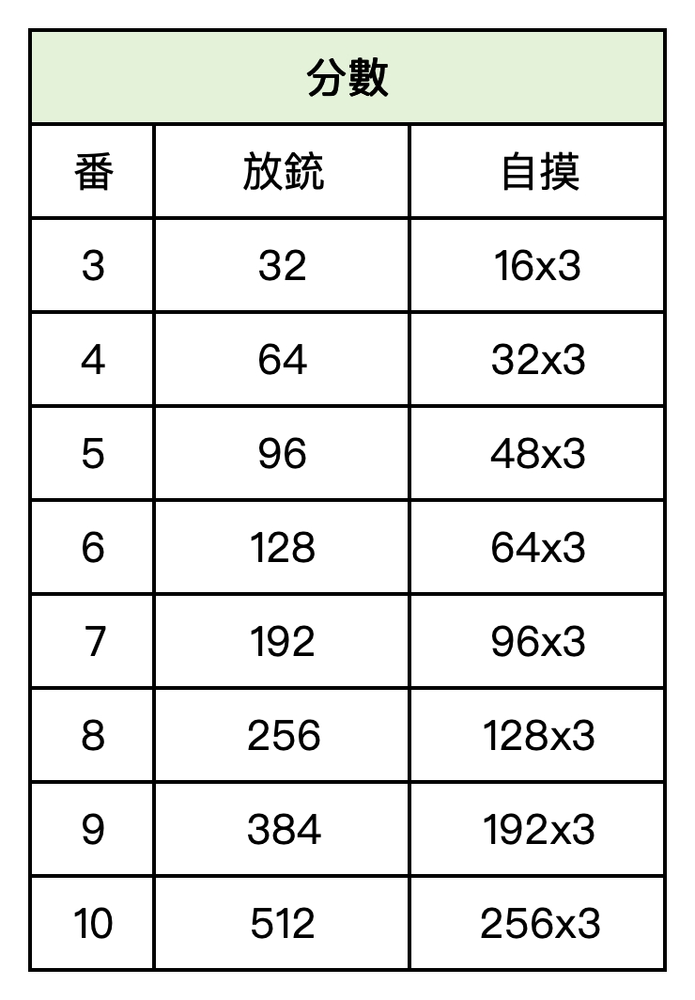
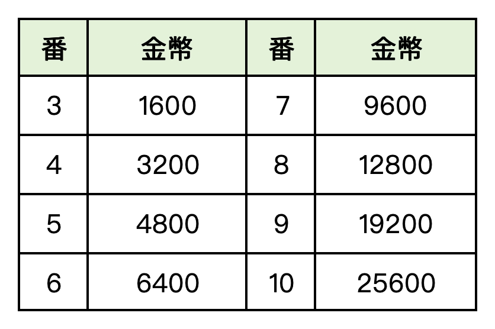

香港麻將
香港麻將
香港麻將是一種節奏明快的四人傳統麻將。玩家需要組合面子與雀頭，並在做牌速度、防守與最低番數之間取得平衡。
以下內容描述麻將國目前的香港麻將牌桌。香港麻將另有不同的家庭與比賽規則，牌組、起和番數及支付方式可能不同。
麻將國目前規則
- 136張牌: 包括萬、索、筒三門共108張數牌，以及東南西北四種風牌與中發白三種三元牌共28張字牌。目前牌桌不使用花牌、季節牌或百搭牌。
- 行牌: 每位玩家起手13張，之後輪流摸一張、打一張；一般和牌由14張牌組成。
- 和牌結構: 標準結構為四組面子加一對雀頭；十三幺是認可的特殊結構。
- 面子: 順子是同門連續三張，刻子是三張相同牌，槓子是四張相同牌；可按牌桌規則使用他家打出的牌組成副露。
- 起和與封頂: 至少3番才可和牌。符合條件的番種可以疊加，但計分最高按10番計算。
- 支付: 食出銃時由出銃者支付表中全部分數；自摸時，其餘三家各自支付表中的自摸分數。
- 包牌: 當一張打牌讓他家完成第四組副露，或完成第三組三元牌副露時，可能形成包牌；第四組為暗槓則不形成該項包牌，後出現的包牌會取代先前包牌。
目前牌桌番種
以下為目前牌桌採用的主要番種，滿足條件時按疊加方式計算。
1番
- 平糊: 四組順子加一對雀頭，不含刻子或槓子。
- 門前清: 沒有明露面子；按本番種規則，暗槓也視為副露。
- 自摸: 自己摸到和牌牌。
- 三元牌: 中、發、白任一種的刻子或槓子。
- 門風或圈風: 與座位或本圈相同的風牌刻子或槓子；兩者重疊時計2番。
- 混幺九: 只含一、九與字牌，並組成對對糊結構。
- 特殊和牌: 搶槓糊、槓上開花、海底撈月各計1番。
3番
- 混一色: 一種數牌加字牌。
- 對對糊: 四組刻子或槓子加一對雀頭，不含順子。
- 小三元: 兩組三元牌刻子或槓子，加第三種三元牌作雀頭；另計兩組三元牌，合計5番。
5番、7番與10番
- 大三元: 本身5番，另計三組三元牌，共8番。
- 清一色: 全手只使用一種數牌且沒有字牌，計7番。
- 10番牌型: 全番子、小四喜、大四喜、坎坎糊（不可有槓）、十八羅漢、清幺九、天糊、地糊、十三幺、槓上槓自摸及九子連環。
計分表
先合計可同時成立的番種，再查表。食出銃欄為出銃者支付總額，自摸欄為其餘每家支付的金額。

二人牌桌
麻將國二人模式會調整牌組，並採用獨立計分表。
- 80張牌: 去掉索子與萬子中的2至8，保留完整筒子、全部字牌，以及另外兩門的一與九。
- 計分: 二人牌桌將3至10番換算為下圖所示的金幣數值。

實用策略
- 高效達到3番: 圍繞能合法達到起和線的組合規劃，避免手牌很快成形卻不夠番。
- 讀取公開資訊: 碰、槓與棄牌會暴露對手可能保留的花色、風牌與三元牌。
- 適時防守: 對手明顯追求高番牌型時，避免打出可能完成其牌型的危險牌。
- 留意包牌: 讓對手完成第四組副露或最後一組三元牌副露，可能承擔包牌責任。
香港麻將常見問題
目前牌桌使用花牌或百搭牌嗎？
不使用。麻將國目前牌桌只使用136張數牌與字牌；其他香港規則可能加入八張花牌與季節牌。
為什麼2番不能和牌？
目前牌桌以3番起和。牌型即使結構完整，可疊加番數不足3番仍不能和牌。
多個番種可以一起計算嗎？
可以，彼此相容的番種會疊加。例如小三元還會計算其中兩組三元牌的番數。
包牌是什麼意思？
包牌是在指定情況下，把全部支付責任交給提供關鍵副露牌的玩家，與一般出銃支付不同。
這些規則適用於所有香港麻將嗎？
不完全適用。家庭與比賽規則會有差異，本頁記錄麻將國目前香港模式所使用的規則與計分表。
香港麻將相關頁面
可以查看歷史總局數排行榜，或反映規則與翻譯問題。
特別感謝
感謝您協助麻將國持續改善香港麻將體驗。